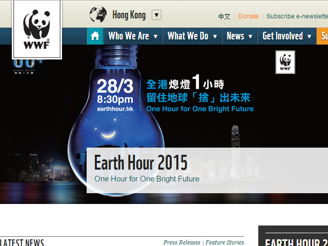

World Wide Fund For Nature Hong Kong
Aim & Mission
World Wide Fund For Nature Hong Kong (WWF) is one of the world's most respectable conservation organizations, with a global network active in more than 100 countries. Founded in 1961 with headquarters based in Switzerland, WWF's mission is to build a future in which humans live in harmony with nature by
- conserving the world's biological diversity
- ensuring that the use of renewable natural resources is sustainable
- promoting the reduction of pollution and wasteful consumption
WWF-Hong Kong has been working since 1981 to deliver solutions for a living planet through Conservation, Footprint and Education programmes. In support of our global mission, WWF-Hong Kong’s vision is to transform Hong Kong into Asia’s most sustainable city where nature is conserved, carbon pollution is reduced, and consumption is environmentally responsible.
Activities & Services
Recent Activities
Run For Change
Run For Change is WWF-Hong Kong’s first charity run. It will be held during Earth Hour, on the night of 28 March, along the jogging path of the West Kowloon Waterfront Promenade. Participants will be able to witness the lights going out around Victoria Harbour before running under the stars next to Hong Kong’s darkened skyline.Visit Mai Po
The wetlands around the Mai Po marshes and Inner Deep Bay offer visitors a chance to experience Hong Kong’s biodiversity first-hand. WWF can help make visiting Mai Po easier by assisting with organised tours.Walk for Nature
The Mai Po Walk For Nature is an annual event happening around the end of the year and is unique chance for visitors to experience the beauty of the Mai Po natural environment while enjoying and learning about WWF's conservation work.The Big Bird Race
The Big Bird Race is WWF-Hong Kong’s longest-running fundraising event. Established in 1984, the funds raised directly contribute to the conservation and management of the Mai Po Nature Reserve, a Wetland of International Importance under the Ramsar Convention.
Main Services
Conservation
WWF’s conservation efforts work to protect marine, freshwater, species and habitat management. Operating locally and regionally, WWF’s conservation initiatives aim to monitor and preserve Hong Kong’s rich biodiversity. The extent of wildlife, flora and other endemic tropical life remains largely unknown to many Hong Kong people, hidden behind the dense city landscape.Footprint
If our demands on the planet continue to increase at the same rate, by the mid-2030s, we would need the equivalent of two planets to maintain our lifestyles. WWF takes a leading role in promoting, advising and implementing initiatives to reduce Hong Kong’s ecological footprint.Education
As inheritors of the future, the next generation will take responsibility for the protection of our environment. WWF’s education for sustainable development (ESD) programmes aim to promote stronger commitment from the community for conservation through fun, engagement and real life experience.
Job & Volunteering
Current Job Vacancies
- Project Officer, Discovering Biodiversity in Hong Kong Wetlands (2-year contract) (Job Code: W-PO-DB)
- Database Officer (Job code: W-DO)
- Senior Programme Development Officer (Job code: W-SPDO)
- Programme Officer, Sustainable Seafood (Contract) (Job Code: W-PO-SS-C)
- Manager, Fundraising Events & Trading (Job Code: W-MFET)
Volunteering
Volunteering for WWF is a great way to get personally involved in local conservation and for experience working in environmental protection. WWF welcomes all volunteers at a range of levels, from office assistance to fundraising and even field work at sites such as Mai Po in Hong Kong.
Download our Volunteer Application Form or email us via volunteers@wwf.org.hk.
Contacts
24-hour hotline: (852) 2526 1011
Kwai Hing Office
- Fax: (852) 2845 2764
- Email: wwf@wwf.org.hk
- Website: http://www.wwf.org.hk/en/
- Address: 15/F, Manhattan Centre, 8 Kwai Cheong Road, Kwai Chung, New Territories
Central Visitor Centre
- Fax: (852) 2845 2734
- Address: 1 Tramway Path, Central, Hong Kong
Mai Po Nature Reserve - Public Visit
- Fax: (852) 2482 0369
- Email: publicvisit@wwf.org.hk
Mai Po Nature Reserve - Education Centre
- Fax: (852) 2482 0369
- Email: maipo@wwf.org.hk
Island House Conservation Studies Centre
- Fax: (852) 2651 0276
- Email: ihcsc@wwf.org.hk
Hoi Ha Marine Life Centre
- Fax: (852) 2328 2633
- Email: hhwmlc@wwf.org.hk
Other Information
Support WWF
Individual Support
Many animals and habitats face increasing threats. We have an incredible planet and a responsibility to protect it for future generations. Your monthly donations are crucial in delivering a stable source of income for us to sustain and grow our conservation and education programmes. Monthly donations also minimize administration costs so we can use more of your donation towards our crucial work to protect our environment.
Symbolic wild animal adoption
There are as few as 3,200 tigers and 1,600 pandas remaining in the wild today. Your symbolic adoption can secure the long-term survival of these animals and their habitat, well as to support WWF's conservation effort in Hong Kong.
Become a WWF Member
By joining WWF you'll become a local part of the global effort to protect the environment and reduce our ecological footprint. As a member, you will be kept up-to-date on local, regional and global environmental issues through receiving WWF's About Life quarterly magazine(s) as well as a free tour to visit Mai Po. Other membership offers are also available.
Screen-shot: 
back to top